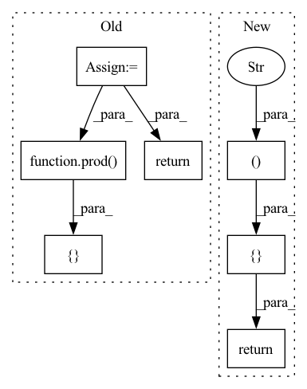

Pattern ID :16374
Before Change
acc *= shp
// TODO: support multistage reduces
ret = type(x)(new_shape)
CLProgram("reduce", f{x.contiguous_view("A")}
__kernel void reduce(__global const float *a_g, __global float *res_g) {{
int gid = get_global_id(0); int idx = gid; {view.expr.replace("//", "/")};
float out = {start};
{"".join([ls for ls, _ in loop[::-1]])}
float a = get_A(a_g, idx); {code};
{"".join([le for _, le in loop])}
res_g[gid] = out;
}})([ prod( ret.shape) ], None, x.cl, ret.cl)
return ret
def _processing_op(ret, bufs: List[Tuple[str, GPUBuffer]]=[], code:str="acc", C:Optional[ConvArgs]=None) -> GPUBuffer:
if C is not None:After Change
def reduce_op(x, op:ReduceOps, new_shape:Tuple[int, ...]):
if op == ReduceOps.SUM: code, start = "acc + A", "0.0"
elif op == ReduceOps.MAX: code, start = "max(A, acc)", "-INFINITY"
return type(x)(new_shape)._processing_op([ ("A" , x )In pattern: SUPERPATTERN
Frequency: 3
Non-data size: 7
Instances Fragment ID: 55190606
Project Name: geohot/tinygrad
Commit Name: e6733286df8fa0742750367ee5e132a3f547ef08
Time: 2022-07-08
Author: geohot@gmail.com
File Name: tinygrad/llops/ops_gpu.py
M Class Name: GPUBuffer
N Class Name: GPUBuffer
M Method Name: reduce_op(3)
N Method Name: reduce_op(3)
M Parent Class:
N Parent Class:
M File Name: tinygrad/llops/ops_gpu.py
N File Name: tinygrad/llops/ops_gpu.py
M Start Line: 122
M End Line: 147
N Start Line: 122
N End Line: 122
Before Change
return ret
def binary_op(op, x, y):
ret = GPUBuffer(x.shape)
assert x.shape == ret.shape and y.shape == ret.shape
binop = clbuild("binop",
__kernel void binop(__global const float4 *a_g, __global const float4 *b_g, __global float4 *res_g) {
int gid = get_global_id(0);
float4 A = a_g[gid];
float4 B = b_g[gid];
res_g[gid] = convert_float4(+code_for_op[op]+);
})
binop([ roundup(prod( ret.shape) )//4return ret
def reduce_op(op, inp, new_shape):
ret = GPUBuffer(new_shape)After Change
return ret
def unary_op(op, x): return elementwise_op([("A", x)], code_for_op[op])
def binary_op(op, x, y): return elementwise_op([ ("A" , x ), ("B", y) Fragment ID: 55190607
Project Name: geohot/tinygrad
Commit Name: d05e7c291ad428ba3584a1529e6d71c264c5b7b9
Time: 2022-06-19
Author: 72895+geohot@users.noreply.github.com
File Name: tinygrad/llops/ops_gpu.py
M Class Name: AnonimousClass
N Class Name: AnonimousClass
M Method Name: binary_op(3)
N Method Name: binary_op(3)
M Parent Class:
N Parent Class:
M File Name: tinygrad/llops/ops_gpu.py
N File Name: tinygrad/llops/ops_gpu.py
M Start Line: 78
M End Line: 88
N Start Line: 83
N End Line: 83
Before Change
}
def unary_op(op, x):
ret = GPUBuffer(x.shape)
unop = clbuild("unop",
__kernel void unop(__global const float4 *a_g, __global float4 *res_g) {
int gid = get_global_id(0);
float4 A = a_g[gid];
res_g[gid] = convert_float4(+code_for_op[op]+);
})
unop([ roundup(prod( ret.shape) )//4return ret
def binary_op(op, x, y):
ret = GPUBuffer(x.shape)After Change
ewop([prod(ret.shape)], None, ret.cl, *[buf.cl for _, buf in bufs])
return ret
def unary_op(op, x): return elementwise_op([ ("A" , x ) Fragment ID: 55190605
Project Name: geohot/tinygrad
Commit Name: d05e7c291ad428ba3584a1529e6d71c264c5b7b9
Time: 2022-06-19
Author: 72895+geohot@users.noreply.github.com
File Name: tinygrad/llops/ops_gpu.py
M Class Name: AnonimousClass
N Class Name: AnonimousClass
M Method Name: unary_op(2)
N Method Name: unary_op(2)
M Parent Class:
N Parent Class:
M File Name: tinygrad/llops/ops_gpu.py
N File Name: tinygrad/llops/ops_gpu.py
M Start Line: 67
M End Line: 75
N Start Line: 82
N End Line: 82